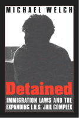

An inside look at the INS criminal justice system and its treatment of detainees
An inside look at the INS criminal justice system and its treatment of detainees


 An inside look at the INS criminal justice system and its treatment of detainees
An inside look at the INS criminal justice system and its treatment of detainees

|  |
DetainedImmigration Laws and the Expanding I.N.S. Jail ComplexMichael Welchpaper EAN: 978-1-56639-978-4 (ISBN: 1-56639-978-5) |
"Michael Welch offers not just a comprehensive review of the devastating impact of U.S. anti-immigrant laws and policies since 1996, but a compelling explanation for how a nation of immigrants could adopt an 'us versus them' attitude toward newcomers. This book should be required reading for policy makers and citizens concerned about our nation's just treatment of immigrants."
—Donald Kerwin, Executive Director, Catholic Legal Immigration Network, Inc.
In 1996, Congress passed expansive laws to control illegal immigration, imposing mandatory detention and deportation for even minor violations. Critics argued that such legislation violated civil liberties and human rights; correspondingly, in 2001, the Supreme Court ruled that many facets of the 1996 statutes were unconstitutional. Michael Welch shows how what he calls "moral panic" led to the passage of the 1996 laws and the adverse effects they have had on the Immigration and Naturalization Service, producing a booming detainee population and an array of human rights violations. Detained: Immigration Laws and the Expanding I.N.S. Jail Complex offers sensible recommendations for reform along with an enlightened understanding of immigration. In an epilogue, Welch examines closely the government's campaign to fight terrorism at home, especially the use of racial profiling, mass detention, and secret evidence.
Recently, the INS, particularly its enforcement and detention operations have expanded dramatically. This book will offer many readers their first look inside that system. It will be an invaluable guide to thinking through whether the system is fit to take on the additional responsibilities being asked of it in the post-September 11th world.
Excerpt available at www.temple.edu/tempress
"This is a timely and striking study. Michael Welch shows the ugliness of the formidable powers given to the INS ('Expedited Removal,' 'Indefinite Detention'): asylum seekers criminalized; refugees stigmatized and illegal immigrants warehoused (20,000 in 2001, many in local jails and detention centers run for corporate profit). Detained demands an audience well beyond its subject and geographical borders."
—Stanley Cohen, Professor of Sociology, London School of Economics
"Welch shows in riveting detail how American immigration law and policy have increasingly relied on incarceration, locking up thousands of immigrants not because they pose any real danger, but as a collective expression of moral panic and hostility toward perceived outsiders. In the wake of September 11, as government officials exploit immigration law for criminal law ends, Welch's cogent analysis could not be more timely and important. This is critical reading for anyone concerned with how this nation of immigrants treats immigrants in the years to come."
—David Cole, professor, Georgetown University Law Center, and legal affairs correspondent, The Nation
"A well written and timely analysis of INS detention policies and the controversies surrounding them. The hallmark of Welch's work, both here and in his previous publications, is the care he takes in presenting controversial issues....Welch has written a fine book that provides a framework for understanding the extraordinary tradeoffs between security and civil liberties."
—Michael Hamm, Indiana State University and author of The Abandoned Ones: The Imprisonment and Uprising of the Mariel Boat People
"In 1996, Congress passed expansive laws to control illegal immigration, imposing mandatory detention and deportation for even minor violations. Welch argues that 'moral panic' led to the passage of the 1996 laws, and that the laws have had adverse effects on the Immigration and Naturalization Service, producing a booming detainee population and an array of human rights violations."
—Law and Social Inquiry, Book Notes
"The book is most useful in recounting [the detainee's] plight to a new and wider audience."
—International Migration Review
"...offers invaluable insights that extend our understanding of both recent immigration policy and criminal justice policy."
—Athan Theoharis, Political Science Quarterly
"[Welch] provides insight into a topic that has been driven by fear, anecdotes, impressions, and stereotypes. Against the backdrop of September 11, the analysis in Detained is quite powerful....given the void in the literature and the many positive contributions it offers to sociologists, Detained moves the immigration and crime literature one major step forward in shattering the stereotypes of the crime-prone immigrant."
—Contemporary Sociology
Read a review from Western Criminology Review, Volume 4.3 (2003), written by Kathleen Nadeau (pdf).
Visit Professor Welch's homepage, www.professormichaelwelch.com, for more information about his publications.
Acknowledgments
1. Introduction
2. Moral Panic over Immigrants
3. The Campaign against Immigrants
4. Ironies of Immigration Control
5. Criminalizing Asylum Seekers and the Indefinitely Detained
6. Warehousing Illegal Immigrants
7. Neglecting Unaccompanied Children
8. The INS Detention Industry
9. Reforming the System
Epilogue: September 11, 2001, and the Challenge Ahead
Notes
References
Cases
Index
Michael Welch is Associate Professor of Criminal Justice at Rutgers University, New Brunswick, New Jersey. He is author of numerous articles on penology and criminalization campaigns. His other books include Punishment in America: Social Control & the Ironies of Imprisonment, Corrections: A Critical Approach, and Flag Burning: Moral Panic and the Criminalization of Protest.
Law and Criminology
Political Science and Public Policy
Sociology
© 2015 Temple University. All Rights Reserved. This page: http://www.temple.edu/tempress/titles/1408_reg.html.